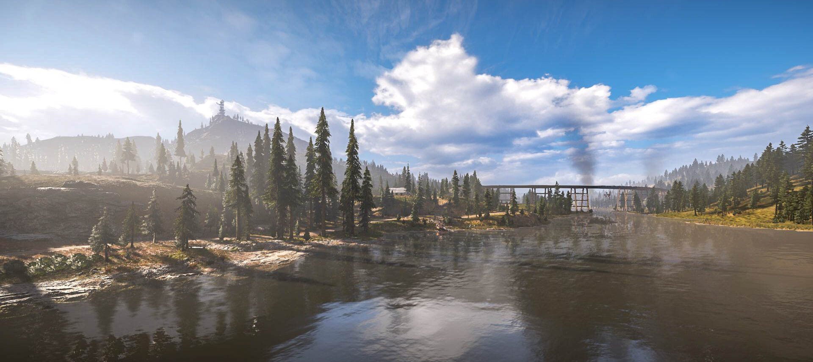

A Far Cry 5 egy lenyűgöző, változatos területet kínál játékosainak, mely az amerikai Montana állam vidékét öleli fel. A térkép széles skálájú környezeteket kínál, beleértve a hegyeket, erdőket, mezőket és városokat is. A Hope County nevű terület a játék fő helyszíne, melyben a játékosok felfedezhetik a szabadon járható területeket, településeket, és részt vehetnek különféle küldetésekben. A folyók és tavak átszövik a tájat, adnak lehetőséget hajózásra és halászásra, miközben a hegyek kihívást jelentenek az expedíciók és a vadászat során. A térkép minden sarkában rejtett gyöngyszemek és veszélyek várnak, így felfedezése sosem lesz unalmas.
Régiók az ellenségek alapján
John Régiója
{kind=link}
A "Becsület személyesen" nevű régiót uralja, és a legmeggyőzőbb és manipulatívabb tagja a Seed családnak. John egy hatalmas területet ural, amelyet gazdaságilag és katonailag is kihasznál. Különlegessége, hogy a játékosoknak először meg kell szerezniük bizonyos területeket, mielőtt legyőzhetik őt.
Faith régiója
{kind=link}
A "Mennyország kapujában" régiót uralja, ahol a Bliss nevű hallucinogén drogot terjeszti. Faith különlegessége, hogy képes az embereket befolyásolni a Bliss segítségével, amely lehetővé teszi számára, hogy hatalmas területeken hatalmas kontrollt gyakoroljon, és a játékosokat is a hallucinációk világába rántsa.
Jacob regiója

A "Függetlenség születik" régiót uralja, amely erősen elszigetelt és fegyveres erőkkel van megerősítve. Jacob különlegessége, hogy a régióban kiképzett katonái segítségével a játékosokat különféle pszichológiai és fizikai kihívások elé állítja, miközben arra törekszik, hogy befolyásolja és manipulálja őket.
Régiók
{kind=link}
Henbane River
{kind=link}
Henbane River egy festői, de veszélyes régió, amelyet Faith Seed irányít. A területet folyók, mocsarak és sűrű erdők borítják, amelyek között számos veszély leselkedik. A játékosnak meg kell küzdenie Faith hallucinogén anyagai által befolyásolt fanatikusaival, és felszabadítani a régiót az őrületből.
Whitetail Mountains

Whitetail Mountains a hegyvidéki terület, amelyet Jacob Seed ural. Ez a régió meredek hegyekkel, sűrű erdőkkel és vadon élő állatokkal teli vidék. A játékosnak itt gerillaháborút kell vívnia Jacob embereivel, és meg kell szabadítania a hegyvidéket az ő uralma alól.
Joseph Seed területe

A három régió mellett Hope County központi része, ahol Joseph Seed, a szekta vezetője, és az Eden's Gate központja található, szintén fontos szerepet játszik a játék történetében. Joseph Seed a szekta alapítója és karizmatikus vezetője, aki apokaliptikus vízióit terjeszti, és hisz abban, hogy ő az isteni megváltó.